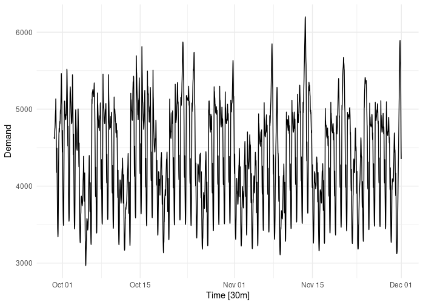
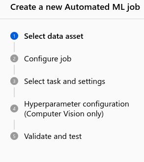
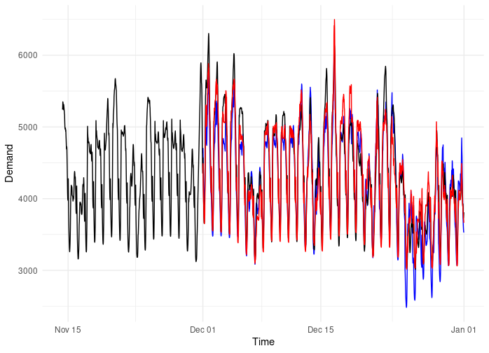
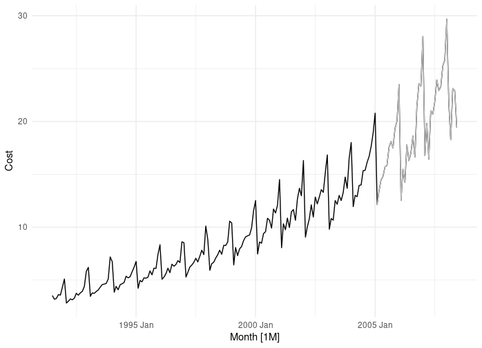
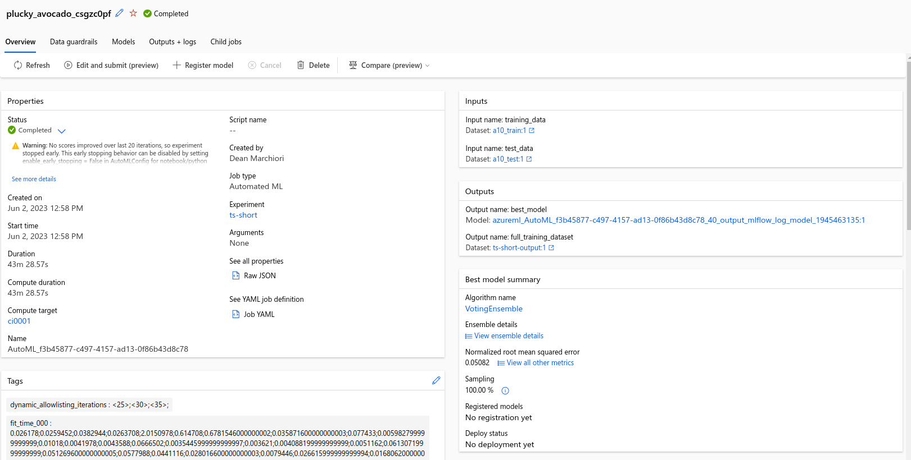
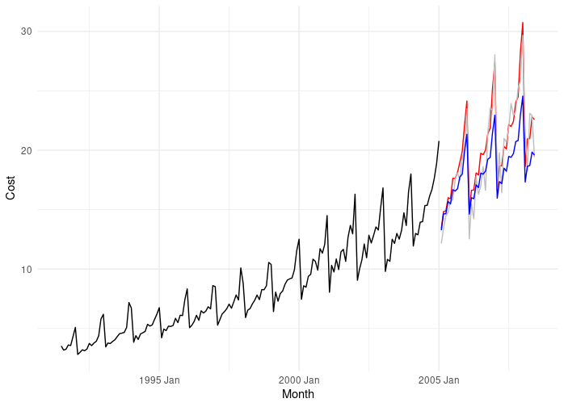

Over the past few years I have been doing more and more work in Microsoft Azure and the Azure Machine Learning Studio. One feature of the Azure ML studio is an automated machine learning feature. This is essentially a no-code UI that ‘empowers professional and nonprofessional data scientists to build machine learning models rapidly’ (emphasis mine).
While many (including me) have leveled a fair amount of criticism towards such solutions, I thought it would be worth seeing what the fuss was about.
Could I go head-to-head on the same predictive modelling challenge and compete with the might of Microsoft’s AutoML solution? Even worse, would I enjoy it? Even more worse, could I win??
Time Series Forecasting Challenge
Objective: Create the most accurate time series forecasting model
Data Source: Half-hourly electricity demand for Victoria, Australia1
Training data: 51,120 records from 2012-01-01 to 2014-11-30
Test data: 1488 records from 2014-12-01 to 2014-12-31
Method 1: Use Microsoft Azure’s Automatic ML product.
Method 2: Hand code a statistical time series model in R
| names | type | description |
|---|---|---|
| Time | datetime | Time stamp |
| Demand | double | Target Variable: Electricity Demand |
| Temperature | double | Temperature for the day |
| Date | date | Date |
| Holiday | logical | Was it a holiday date? |

Method 1: Azure AutoML
The process to set up a new AutoML job was very easy and assumes you are working under somewhat sanitized conditions (which I was in this case).

Once you kick it off, it chugged away for an hour and 33 minutes. To my horror, I realized it takes the ‘kitchen sink’ approach and fits a suite of 41 (!) different machine learning models at the training data. Hyperparameter tuning is done by constructing a validation set using K-Fold cross validation.
The best performing model is then selected and then predictions are run on the test set. It’s a little concerning that Test set evaluation is only in ‘Preview’ mode. It was also very confusing to dig out the results on the test set. Most of the metrics prominently displayed are overly confident in-sample accuracy results.
The winning model in my case was a ‘Voting Ensemble’ of three models
- MaxAbsScaler, ExtremeRandomTrees
- StandardScalerWrapper, XGBoostRegressor
- StandardScalerWrapper, LightGBM
Overall the process was very easy and user friendly. It look a long time to train, but I didn’t have to think about anything - at all (which is usually time consuming) so overall it was a quick solution. I trained the model on a Standard_DS11_v2 (2 cores, 14 GB RAM, 28 GB disk) compute instance which costs $0.2 per hour. So it cost money, but not much.
Performance evaluation to follow below…
Method 2: Manual Time Series Model in R
The process for doing this myself involved much more thought and brain-effort. Here are some notes.
The data set is quite complicated as its sub-daily and has (probably) three seasonal periods (daily, weekly, yearly). There was also maybe some trend and outliers to deal with. The data set also contained covariates such as Temperature and Holiday indicators.
Due to the seasonal complexity many traditional statistical methods were not appropriate like straight ARIMA (autoregressive integrated moving average) and ETS (exponential smoothing). While STL (Seasonal and Trend decomposition using Loess) can handle multiple seasonal periods I wanted a method to handle the covariates (like Temperature and Holidays). My next step was to think of Time Series Linear Regression models. However, accounting for yearly seasonality with 30min data meant fitting 17,520 (2 * 24 * 365) parameters just for this seasonal period. Which seemed excessive.
For longer, multiple-seasonal periods, using Fourier terms can be a good idea. Here a smaller number of terms in a fourier series can be estimated to approximate a more complex function. This type of Dynamic Harmonic Regression2 can also handle exogenous covariates and we can even fit the model with ARIMA errors to account for the short term dynamics of time series data.
In fact, this very approach was outlined in the excellent Forecasting: Principles and Practice3 using this very same example data set. I decided to borrow (steal) the ideas of creating a piece-wise linear trend for temperature. I also went a bit crazy with encoding specific holiday dummy variables and some other tweaks.
Overall I found this method slow to fit, and not overly performant. I decided next to try fitting a Prophet4 model. Prophet is an open-source automated algorithm for time series forecasting developed by Facebook. It uses a Bayesian framework to fit complex, non-linear, piece-wise regression models. For complex time series data, it provides a decent, fast framework including exogenous variables, holiday and seasonal effects. I didn’t do any principled hyperparameter tuning, but I did fiddle around with the model a bit.
Results
So who won?
The AutoML platform did :( , but only just. Below is the comparison of RMSE and MAPE. The AutoML is red, my predictions are in blue. I stuffed up over Christmas a bit, which admittedly is a tricky hold-out month for testing.
| Method | Metric | Value |
|---|---|---|
| Azure AutoML | RMSE | 213 |
| Azure AutoML | MAPE | 3.56 |
| Me | RMSE | 274 |
| Me | MAPE | 4.96 |

Discussion
So overall it was pretty close, but in terms of pure predictive performance, the AutoML platform did pip me at the post. Admittedly, the solution I arrived at was probably more of an ML solution than a ‘classical’ time series method given it is still an automated algorithm. If I had more time and patience I probably could have pursued a more complex regression model. In fact in Forecasting: Principles and Practice, the authors also cite the performance of a straight Dynamic Harmonic Regression is limited, however they go on to propose other innovative approaches56, including splitting the problem into separate models for each 30min period and using regression splines to better capture exogenous effects. So it can be done, but not without a huge amount of effort.
Bonus Round: Medicare Cost Forecast
This all led me to think: If the data are quite complex for a time series problem, then of course a more Machine Learn-y solution would outperform. I wonder what would happen if we repeated the same exercise but with many fewer data points and some quirky time series characteristics.
My hypothesis is, the machine learning models will not have sufficient data to fit well. On the other hand, my experience and gestalt will enable me to select and encode a statistical model that is appropriate and gain an edge on a black-box type of solution.
Objective: Create the most accurate time series forecasting model
Data Source: Monthly Medicare Australia prescription data7, Anatomical Therapeutic Chemical index classification A10
Training data: 163 records from Jul 1991 to Jan 2005 (black line)
Test data: 41 records from Feb 2005 to Jun 2008 (grey line)
| names | type | description |
|---|---|---|
| Cost | double | Cost of the scripts in $AUD |
| Month | double | Month time stamp |

Here we have less than 200 data points, but we can visually inspect the time series and see that there is a clear trend, the process is multiplicative and there is a single, yearly seasonal pattern.
AutoML solution
The AutoML platform again used a Voting Ensemble, churned out in 43 minutes, but this time using:
- ProphetModel (it must have copied me from last round ;))
- Exponential Smoothing

My solution
Given the multiplicative process here, I modeled the log transformed data. (I did try a more generalized Box-Cox transformation, but got better performance with a straight natural log transform). I tried an ARIMA model, using model selection via the Hyndman-Khandakar algorithm8, which resulted in a ARIMA(2,0,1)(1,1,2)[12] w/ drift>.
Results
Yay! I won this round. Quite easily.
| Method | Metric | Value |
|---|---|---|
| Azure AutoML | RMSE | 2.43 |
| Azure AutoML | MAPE | 9.22 |
| Me | RMSE | 1.63 |
| Me | MAPE | 7.23 |

Who is the winner?
Well, I call it a draw.
Here are some of my closing thoughts from this experiment.
An ML solution might be a good choice if:
- You have lots of data
- You care a lot about prediction
- You don’t have to be too transparent
- Interpretation is not very important
- You have a very complex time series data set
I would caveat this with not just blindly modelling your problems away. You still need to understand the process to ensure your predictions are well calibrated and you don’t fall prey to over fitting.
A more classical statistical modelling approach might be a good choice if:
- You want a more flexible framework
- You need to / want to encode domain knowledge
- You want a more interpretable model
- You have fewer data
The good news is, if you are sufficiently smart and motivated (which I am sure you are) you can certainly compete in terms of model performance with an ML solution, even on complex problems. The bad news is, it’s harder and you need to think a bit. You can’t just delegate all your thinking to the machines. Not yet anyway.
References
O’Hara-Wild M, Hyndman R, Wang E, Godahewa R (2022). tsibbledata: Diverse Datasets for ‘tsibble’. https://tsibbledata.tidyverts.org/, https://github.com/tidyverts/tsibbledata/.
Hyndman, R.J., & Athanasopoulos, G. (2021) Forecasting: principles and practice, 3rd edition, OTexts: Melbourne, Australia. OTexts.com/fpp3. Accessed on 2023-06-05.
Other
Thanks to the Tidyverts team https://tidyverts.org/. The new an improved time series stack in R makes all this so easy.
Note: None of this was super-rigorous, and I certainly tilted the board in my favour here and there. It was just fun and a chance to play around with a tool that I have previously avoided for no real reason.
Footnotes
Source: Australian Energy Market Operator; tsibbledata R package↩︎
Young, P. C., Pedregal, D. J., & Tych, W. (1999). Dynamic harmonic regression. Journal of Forecasting, 18, 369–394. https://onlinelibrary.wiley.com/doi/10.1002/(SICI)1099-131X(199911)18:6%3C369::AID-FOR748%3E3.0.CO;2-K↩︎
Hyndman, R.J., & Athanasopoulos, G. (2021) Forecasting: principles and practice, 3rd edition, OTexts: Melbourne, Australia. OTexts.com/fpp3. Accessed on 2023-06-05.↩︎
Taylor SJ, Letham B. 2017. Forecasting at scale. PeerJ Preprints 5:e3190v2 https://doi.org/10.7287/peerj.preprints.3190v2↩︎
Fan, S., & Hyndman, R. J. (2012). Short-term load forecasting based on a semi-parametric additive model. IEEE Transactions on Power Systems, 27(1), 134–141. https://ieeexplore.ieee.org/document/5985500↩︎
Hyndman, R. J., & Fan, S. (2010). Density forecasting for long-term peak electricity demand. IEEE Transactions on Power Systems, 25(2), 1142–1153. https://ieeexplore.ieee.org/document/5345698↩︎
Source: Medicare Australia; tsibbledata R package↩︎
Hyndman, R. J., & Khandakar, Y. (2008). Automatic time series forecasting: The forecast package for R. Journal of Statistical Software, 27(1), 1–22. https://doi.org/10.18637/jss.v027.i03↩︎